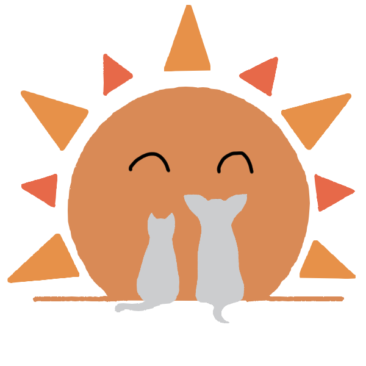

もがみ動物病院
かけがえのない、家族の健康のため、できることすべてへのお手伝い

受信前に必ずお電話にてご予約をお取りください。
06-0000-1234
（受付時間 08:30~18:30)
- 診療時間
- 09:00 ~ 13:00
(最終受付 12:30) - 15:00 ~ 19:00
(最終受付 18:30) - 月
- 火
- 水
- 木
- 休
- 金
- 土
- 休
- 日
- 休
- 休
かけがえのない、家族の健康のため、できることすべてへのお手伝い
受信前に必ずお電話にてご予約をお取りください。
（受付時間 08:30~18:30)
もがみ動物病院が大切にする考え方

初めての方へのお願いや診察に関する詳細
愛の溢れるスタッフのみんなを紹介します
ワンちゃんたちが自由に走り回ることができる広々としたドッグランを併設

暮らしのサポートを通じて飼い主さまと「大切な家族」の生活をトータルでサポート

当院にお越しいただく方から問合せの多い質問を集めました
パピークラスとは、わんちゃんが飼い主さまや他の犬と遊びを通じて触れ合うことで深い絆をつくることを目的とした、しつけの勉強会です。仔犬の発育にとって一番大切な５ヶ月齢までの仔犬を対象に行っています。愛犬と一緒に楽しく学べるもがみ動物病院のパピークラスに、是非ご参加ください。
当院で働くスタッフ達や院長が日頃感じている日常を日替わりで色々なことを綴っていきます。
当院で起こったこと、思ったこと、病院も関係なくごく普通の生活で思ったことなども書いています。面白おかしく楽しい時間を過ごしていただければと思います。
Guidance
受診前に必ずお電話にてご予約をお取りください。
０６−００００−１２３４
(受付時間 ０８：３０〜１８：３０)
５３０−００３６
大阪府大阪市北区同心１−１−１
地下鉄谷町線・堺筋線南森町より徒歩５分